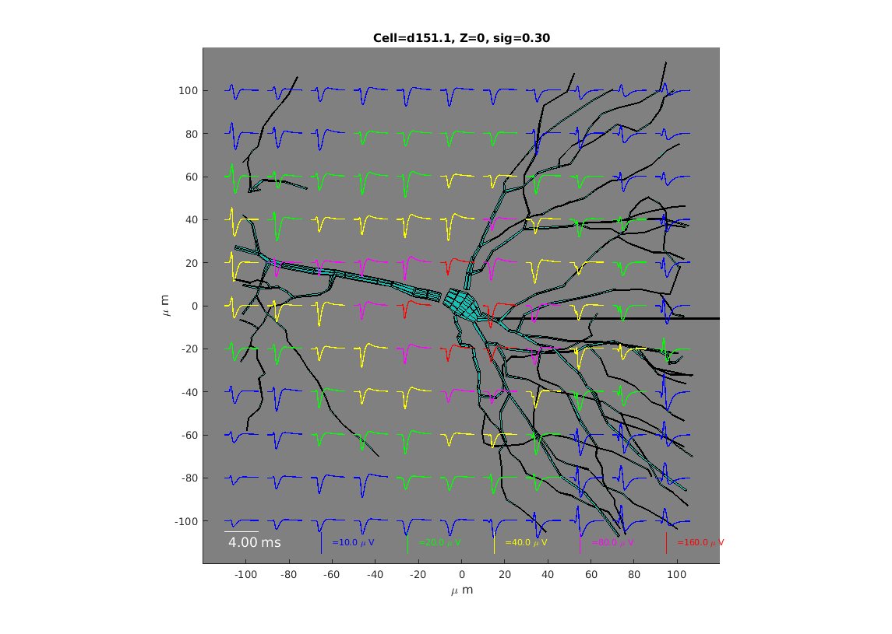

This is the readme for the NEURON and MATLAB code associated with the paper:
Gold C, Henze DA, Koch C (2007) Using extracellular action potential recordings to constrain compartmental models. J Comput Neurosci 23:39-58
http://dx.doi.org/10.1007/s10827-006-0018-2
This code was contributed by Carl Gold.
If you need extra help running the NEURON simulation please see:
https://senselab.med.yale.edu/ModelDB/NEURON_DwnldGuide.cshtml
Example use:
------------
Either auto-launch from ModelDB if your browser is configured or, after downloading and extracting this archive, compiling the mod files in the mod folder with either "nrnivmodl mod" (unix), dragging and dropping the mod file on mknrndll (mac os), or using mknrndll on the mod folder and moving the nrnmech.dll up a level (mswin), start with "nrngui mosinit.hoc" (unix), drag and dropping the mosinit.hoc file onto nrngui (mac os), or double clicking mosinit.hoc in the file explorer (mswin).
After the simulation is complete, exit NEURON and run the following scripts in the matlab command prompt after cd'ing to the mat sub-folder:
addpaths
zplane_eap_calc('line', [], [], 0.3, [-500 500 -150 150], 0, 50);
plot_eap_grid('line', [], [], 0.3, [-500 500 -150 150], 0, 50);
After a short while you should see a figure includes waveforms like those in Figure 8 in the paper:

See the "docs" folder for more instructions on using the
Extracellular Action Potential Simulation (EAPS) package.
20190925 Model entry updated to include a mosinit.hoc file so autolaunch
will work (can also be used to easily start model).
20190926 Model entry updated to include a screenshot and updates to the
readme and docs/index.html plus added temp folder to mat (matlab subfolder).
20190927 Updated so that multiple runs would work when d151_params_X.hoc are
cp'd onto d151_params.hoc (see docs/index.html) for more info.